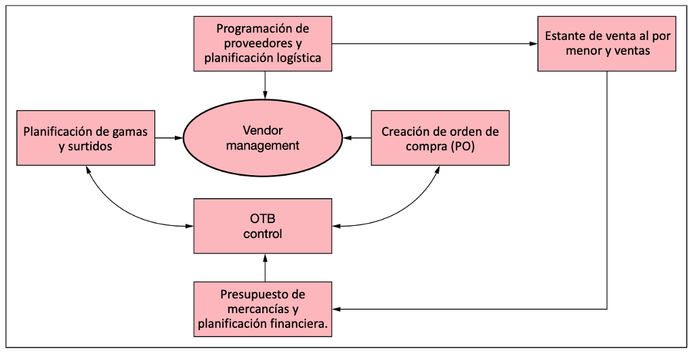
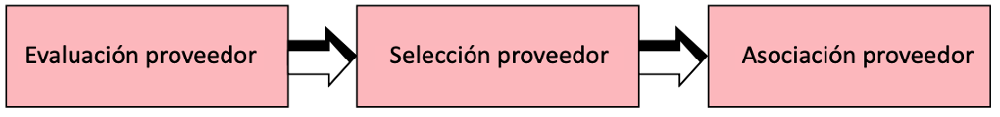
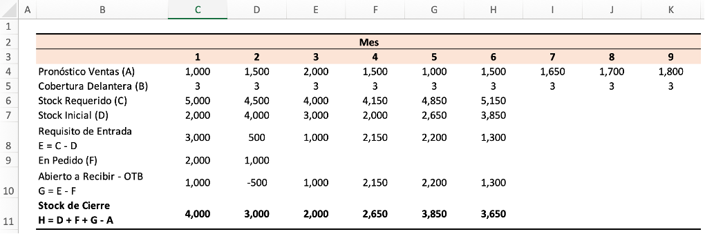
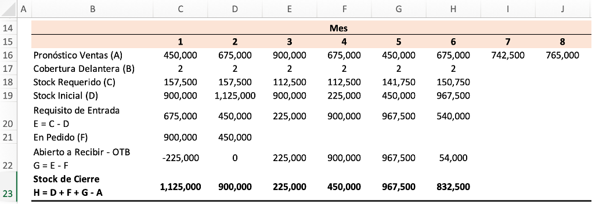
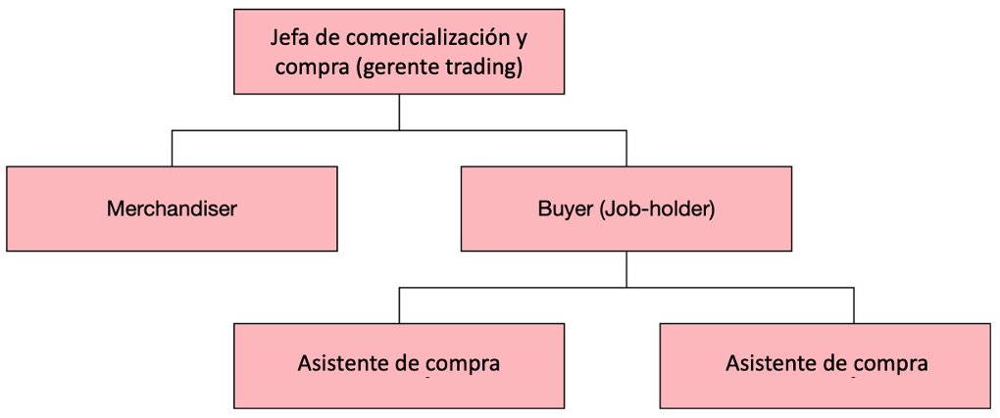
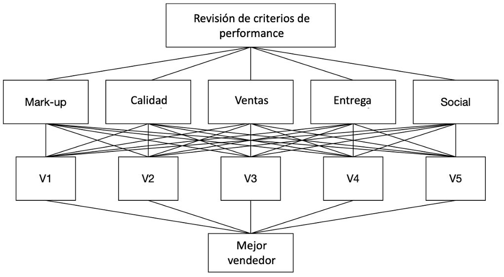

Objetivos
Describir la función de compra.
Explicar qué se entiende por compra de mercancías y planificación de reposición.
Defina varios métodos para preparar el plan de compras para una organización minorista.
Comprender el uso de la herramienta de planificación anticipada de ‘OpenTo Buy’ en el proceso de compra.
Elucidar las actividades clave de compra y los pasos involucrados en ellas.
Tener una comprensión de la organización de compras con los roles y responsabilidades clave de los compradores.
La función de compra
Comprar para una organización minorista es una función fundamental de la gestión de mercancías. El proceso de compra comienza con la preparación del plan de compra, utilizando varios métodos. La planificación de compras comienza desde el proceso de presupuestación de compras a través de una adecuada planificación financiera. Dicha planificación financiera se basa en la inversión en inventario planificada como resultado del número de rotaciones de stock planificadas para cada tienda, acumuladas para la organización. El modelo de compra de mercancías definido aquí aclara los pasos del proceso de compra de mercancías.
Cumplimiento de la gama y el surtido (abastecimiento)
Una vez que el plan de compra está listo, se debe obtener la mercancía. Dado que la planificación de mercancías en su rango y la planificación de surtidos han elaborado los números en cada peldaño de la jerarquía, la división de compras del departamento de compras y comercialización tiene que comenzar el proceso de abastecimiento de mercancías. Para una tienda por departamentos multimarca, el proceso de abastecimiento es simple y se extiende hasta el punto de obtener mercadería de las marcas que el surtido de la tienda tiene en su arquitectura. Para obtener las otras categorías, la función de compras identifica a los proveedores correctos con el tipo correcto de capacidades.
Figura 1.1 Modelo de compras

Gestión de proveedores
Para cualquier organización minorista exitosa, la función de compras debe trabajar de manera eficiente con proveedores muy confiables que estén dispuestos a asociarse con la organización para lograr una rentabilidad mutua a largo plazo al satisfacer las necesidades de los clientes. El proceso de selección de proveedores seguido en cualquier organización minorista comienza con la evaluación de las capacidades del proveedor; la selección se basa en el cumplimiento de los criterios requeridos, lo que implica la negociación y luego la finalización mediante la celebración de un contrato de asociación a largo plazo.

Evaluación de proveedores: la evaluación de proveedores se realiza en función de los parámetros seguidos por la organización. La evaluación de los proveedores tiene en cuenta algunos aspectos como la ubicación del proveedor, las capacidades para producir la mercancía requerida, etc. Dicha evaluación se realiza entre los muchos proveedores disponibles.
Selección de proveedores: el proceso de selección de proveedores logra la elección de los proveedores adecuados para trabajar con la organización. Esto incluye las mejores capacidades de su clase junto con la capacidad de lograr los objetivos correctos de costos y fijación de precios de la organización. Negociar las tarifas con los proveedores adecuados constituye una parte importante del proceso de selección de proveedores.
Asociación de proveedores: una vez que se finaliza la selección y se cumplen las capacidades y los criterios requeridos, se inicia una asociación entre la organización minorista y el proveedor a través de un acuerdo que elabora los términos, roles y responsabilidades de cada parte. Las grandes organizaciones minoristas a menudo trabajan con 300 a 400 proveedores y una relación a largo plazo es fundamental para fomentar el crecimiento mutuo sostenible en la industria.
Desarrollo de proveedores
Para productos nuevos e innovadores desarrollados como parte de la cartera de marcas en la tienda, es posible que los proveedores experimentados no estén disponibles para suministrarlos. En tal escenario, el equipo de compras identifica posibles proveedores con capacidades básicas y los convierte en proveedores con las capacidades específicas deseadas. A menudo, la organización puede trabajar con dichos proveedores asociándolos con inversiones.
Negociación con proveedores
Negociar con los proveedores es un arte que suelen dominar los compradores. Las organizaciones minoristas utilizan sus habilidades y el poder de las adquisiciones cuánticas para negociar buenos precios con los proveedores. Una situación en la que todos ganan puede fomentar una relación sana entre el minorista y el vendedor. Los minoristas negocian con los proveedores descuentos tales como descuentos comerciales, descuentos por cantidad, descuentos promocionales o de exhibición y descuentos por pago. (La negociación de descuentos es únicamente aplicable si el proveedor no puede o tiene la capacidad de demostrar valor superior).
Descuento comercial
En algunos casos, el minorista aprovecha los suministros directos de los agentes o mayoristas del vendedor y el vendedor trata al minorista como una cuenta clave y el descuento adicional se transfiere al socio del canal comercial que se entrega al minorista. Esto se conoce como descuento comercial.
Desarrollo de proveedores
Para productos nuevos e innovadores desarrollados como parte de la cartera de marcas en la tienda, es posible que los proveedores experimentados no estén disponibles para suministrarlos. En tal escenario, el equipo de compras identifica posibles proveedores con capacidades básicas y los convierte en proveedores con las capacidades específicas deseadas. A menudo, la organización puede trabajar con dichos proveedores asociándolos con inversiones.
Negociación con proveedores
Negociar con los proveedores es un arte que suelen dominar los compradores. Las organizaciones minoristas utilizan sus habilidades y el poder de las adquisiciones cuánticas para negociar buenos precios con los proveedores. Una situación en la que todos ganan puede fomentar una relación sana entre el minorista y el vendedor. Los minoristas negocian con los proveedores descuentos tales como descuentos comerciales, descuentos por cantidad, descuentos promocionales o de exhibición y descuentos por pago. (La negociación de descuentos es únicamente aplicable si el proveedor no puede o tiene la capacidad de demostrar valor superior).
Descuento comercial
En algunos casos, el minorista aprovecha los suministros directos de los agentes o mayoristas del vendedor y el vendedor trata al minorista como una cuenta clave y el descuento adicional se transfiere al socio del canal comercial que se entrega al minorista. Esto se conoce como descuento comercial.
Exhibición o Descuento Promocional
Cuando el minorista acepta ofrecer un espacio exclusivo en los estantes o una tienda dentro de la tienda, o cuando el minorista promociona la mercancía del vendedor con esfuerzos especiales, el minorista negocia un descuento adicional del vendedor. En los supermercados, es una práctica común que las marcas de gran consumo alquilen espacio en los estantes y ofrezcan descuentos promocionales. A veces, tales descuentos se negocian a tasas altas si las conversiones de ventas son mayores.
Descuento de pago
Si los minoristas realizan el pago dentro de un período de tiempo específico o cuando el minorista realiza pagos al contado en efectivo, negocian descuentos más altos con los proveedores. Es una práctica común entre los minoristas solicitar descuentos adicionales cuando realizan pagos instantáneos a los proveedores.
El poder de negociación de los minoristas se fortalece a medida que las organizaciones minoristas crecen con su expansión a varios lugares y con el consiguiente aumento en los volúmenes de mercadería comprada a los proveedores.
Métodos y controles de compra
El plan de compras se elabora siguiendo los presupuestos económicos previstos para cada período. Hay tres métodos populares mediante los cuales se realiza la previsión de la demanda mientras se prepara el plan de compras en las organizaciones minoristas. Ellos son:
Método de existencias estándar
Método de suministro de semanas
Método Open To buy
Método de existencias estándar
El plan de compras se prepara para determinar el inventario de inicio de mes considerando las ventas previstas para el período y el stock de seguridad como nivel de stock estándar. Este método permite una cantidad/valor variable del inventario como stock de seguridad que puede aumentar o disminuir dependiendo de las ventas durante cada período de ventas en el factor de valor de las ventas esperadas del período. Se calcula de la siguiente manera:
\[\frac{Total\ ventas\ pronosticadas\ para\ el\ periodo}{Numero\ de\ meses\ en\ el\ periodo}=\ Promedio\ de\ ventas\ mensuales\ para\ el\ periodo\]
\[\frac{Total\ ventas\ pronosticadas\ para\ el\ periodo}{Rotacion\ de\ existencias\ estimadas\ para\ el\ periodo}=\ Stock\ promedio\ para\ el\ periodo\]
\(Stock\ promedio\ del\ periodo\ -\ Promedio\ de\ ventas\ mensuales\ del\ periodo\ =\ Stock\ estándar\)
\(Stock\ estándar\ +\ Ventas\ mensuales\ planificadas\ =\ Stock\ de\ principio\ de\ mes\ (BOM)\ en\ Retail\)
El papel del stock de seguridad es amortiguar el inventario contra cualquier posibilidad de fluctuaciones en las ventas. Las órdenes de compra se liberan en función de la brecha entre el stock de cierre exacto y el stock esperado a principios de mes del período subsiguiente.
Ejemplo: Veamos el ejemplo de una tienda que vende una categoría de mercaderia con una rotación de existencias de 6 veces al año (Trimestral 1.5 veces). Con ventas planificadas de 30,000 en un trimestre (Tres meses de ventas planificadas de enero 10,000, febrero 8,000 y marzo 12,000)
\[\frac{30,000}{3}=\ 10,000\]
\[\frac{Total\ ventas\ pronosticadas\ para\ el\ periodo}{Rotacion\ de\ existencias\ estimadas\ para\ el\ periodo}=\ Stock\ promedio\ para\ el\ periodo\]
\[\frac{30,000}{1,5}=\ 20,000\]
\(Stock\ promedio\ del\ periodo\ -\ Promedio\ de\ ventas\ mensuales\ del\ periodo\ = Stock\ estándar\)
Entonces, \(Stock\ básico\ =\ (20,000\ -\ 10,000)\ =\ 10,000\)
\(Stock\ estándar\ +\ Ventas\ mensuales\ planificadas\ =\ Stock\ de\ principio\ de\ mes\ (BOM)\ en\ Retail\)
Entonces,
\(BOM\ para\ enero\ =\ (10,000\ +\ 10,000)\ =\ 20,000\)
\(BOM\ para\ enero\ =\ (10,000\ +\ 8,000)\ =\ 18,000\)
\(BOM\ para\ enero\ =\ (10,000\ +\ 12,000)\ =\ 22,000\)
Los stocks BOM también se pueden calcular para la cantidad y el ejemplo que se muestra arriba se puede calcular aplicando la cantidad también.
Método de suministro de semanas
En este método, los periodos de venta se expresan en semanas. Se llega al nivel de inventario calculando las existencias iguales a un número previsto de semanas de suministro relacionándolo con el número previsto de rotaciones de existencias.
\[\frac{Numero\ de\ semanas\ en\ el\ periodo}{Tasa\ de\ rotacion\ de\ stock\ para\ el\ periodo}\ =\ Numero\ de\ existencias\ de\ la\ semana\]
\[\frac{Tasa\ de\ ventas\ estimadas\ para\ el\ periodo}{Numero\ de\ semanas\ en\ el\ periodo}\ =\ Promedio\ de\ ventas\ semanales\]
\(Promedio\ de\ ventas\ semanales\ ×\ Número\ de\ semanas\ para\ almacenar\ =\ Stock\ BOM\)
Por lo tanto, el stock de comienzo de mes se determina tomando en consideración la tasa de rotación de stock planificada que generalmente se obtiene como norma o estándar de la industria a partir de varios informes del sector o se estudia mediante la observación de prácticas competitivas.
Ejemplo: Aplicando los mismos números que vimos en el ejemplo citado en el Método de Stock Estándar,
\[\frac{Numero\ de\ semanas\ en\ el\ periodo}{Tasa\ de\ rotacion\ de\ stock\ para\ el\ periodo}\ =\ Numero\ de\ existencias\ de\ la\ semana\]
\[\frac{12}{1,5}=\ 8\]
\[\frac{Tasa\ de\ ventas\ estimadas\ para\ el\ periodo}{Numero\ de\ semanas\ en\ el\ periodo}\ =\ Promedio\ de\ ventas\ semanales\]
\[\frac{30,000}{12}=\ 2,500\]
\(Promedio\ de\ ventas\ semanales\ ×\ Número\ de\ semanas\ para\ almacenar\ =\ Stock\ BOM\)
\(BOM\ =\ 2,500\ ×\ 8\ =\ 20,000\)
Dado que las ventas semanales promedio y el almacenamiento de existencias de 8 semanas después del índice de rotación de existencias planificado se tienen en cuenta en la planificación de existencias, el BOM para enero, febrero y marzo en el trimestre es de 20,000.
Open To Buy (OTB)
El método más popular seguido en todo el mundo en la compra minorista moderna es el proceso OTB, que es una herramienta eficiente para controlar las compras dentro de los presupuestos financieros y de cantidad. Ayuda a los minoristas a proyectar y controlar las compras futuras para que el flujo de mercancías en la tienda coincida con las ventas anticipadas a las tasas de rotación de existencias deseadas para generar un flujo de efectivo positivo.
Para la compra organizada, es necesario seguir la planificación OTB, ya que evita la compra excesiva, elimina la confusión y permite que la organización obtenga más ganancias.
Entonces, ¿qué es exactamente OTB? OTB se refiere a la mercadería presupuestada para su compra durante un determinado período de tiempo para la cual aún no se han ordenado las existencias. También es el proceso de pronosticar ventas y compras. OTB es una herramienta de planificación que ayuda a establecer presupuestos para los niveles de inventario de ventas y mercancías y a monitorear el estado actual de la cantidad de OTB, que es la cantidad que queda por ordenar para cumplir con el presupuesto.
Todos los minoristas deben usar un plan OTB, ya que muchos tienden a tener existencias excesivas cuando las ventas aumentan y faltan existencias cuando son bajas. A menudo, un pequeño aumento en las ventas conduce a compras excesivas que, en última instancia, afectan el resultado final de la organización minorista. OTB ayuda a un minorista a fijar la cantidad ideal de existencias que debe tener disponible al comienzo de un mes determinado y la cantidad de mercancías nuevas que se recibirán durante el mes.
Un plan OTB eficiente tiene los siguientes elementos:
Planificación de ventas anticipadas (pronóstico de ventas): el plan de ventas debe prepararse para todo el año con detalles mensuales de las ventas planificadas. Un buen plan OTB ayuda a reaccionar ante variaciones en los planes de venta (a medida que se acaba el mes en curso), reprogramar entregas y cancelar o alterar órdenes de compra para futuras entregas, según sea el caso.
Cobertura delantera: Esto se basa en las rotaciones de existencias planificadas para el equipo minorista. Por ejemplo, si la rotación de existencias planificada para la tienda es cuatro veces al año, entonces la tenencia de existencias ideal en cualquier momento debería ser equivalente a la cobertura de existencias de tres meses.
Stock Requerido: Esto se basa en la cobertura delantera planeada para la tienda. Si la cobertura a plazo es para tres meses y el mes actual es el mes 1, entonces el stock requerido será la suma de las ventas planificadas/previstas de los meses 2, 3 y 4.
Inventario inicial (Principio de mes - BOM): El valor del inventario inicial es un cálculo de flujo. En la planificación OTB, la primera entrada es una estimación. A partir del segundo mes en adelante, el stock de apertura es la cifra de stock de cierre del mes anterior.
Requisito de entrada: Esta es la diferencia entre el stock requerido y el stock de apertura.
En Pedido: Son las existencias que ya han sido ordenadas y que deben entregarse durante el período correspondiente.
Abierto para recibir: Esta cifra se obtiene deduciendo el stock en pedido, si lo hay, del requisito de admisión. Esta cifra indica la cantidad de OTB.
Inventario de cierre: Para llegar a esta cifra, es necesario tomar el inventario de apertura, restar las ventas y sumar las cantidades en pedido y abiertas para recibir.
Figura 1.1 Un plan modelo OTB sobre cantidad

Tabla 1.2 Un plan modelo OTB en valor

Ventajas de un plan Open To Buy
El plan OTB permite a los minoristas estimar por adelantado la cantidad de capital de trabajo que debe emplearse en inventario de mes a mes.
Ayuda a garantizar el nivel de inventario correcto para respaldar las ventas planificadas y lograr el mejor margen bruto de retorno del inventario (GMROI).
El plan OTB impone restricciones a los compromisos de mercadería para que la tienda reciba la mercadería correcta en el momento correcto y no antes o después.
Permite un flujo continuo de mercancía fresca a la tienda mes tras mes durante la temporada.
El plan OTB establece metas para que el desempeño real se pueda comparar con el plan y se puedan tomar acciones correctivas en las áreas requeridas.
Por encima de todo esto, un plan OTB eficiente brinda a la organización más oportunidades de obtener ganancias.
Los minoristas que siguen un plan OTB bien formulado tienen éxito en sus esfuerzos de comercialización y compra. El sistema de gestión de mercancías empleado en la organización generalmente admite tales técnicas estadísticas en el plan OTB, pero es la percepción del comprador y la capacidad de toma de decisiones lo que ayuda a obtener los mejores resultados. Los minoristas aplican universalmente el concepto OTB, independientemente de las categorías de mercancías con las que operen.
Si bien el método de existencias estándar y el método de suministro de semanas requieren que se tenga en cuenta una existencia estándar, carecen de flexibilidad para modificar los niveles de inventario inmediatamente después de las ventas. Solo OTB tiene la disposición adecuada para realinear rápidamente los requisitos de compra y, por lo tanto, es el método ampliamente elegido para preparar planes de compra.
Actividades de compra clave
El proceso de compra minorista implica las siguientes actividades clave de compra. Los compradores siguen algunos pasos claros mientras realizan el proceso de compra para cada categoría específica. Las acciones de compra comprenden los siguientes pasos:
Identificación de oportunidades y tendencias de mercado
El primer paso en las actividades de compra es identificar las oportunidades y tendencias del mercado por adelantado. Por lo general, los funcionarios de compras identifican las tendencias con un año de anticipación y la planificación del rango para el próximo año se realiza en el año en curso. Esto implica una previsión precisa de las tendencias en cada mercado en el que opera el minorista. La tarea incluye estudiar la gama de mercancías de los competidores en detalle si alguna competencia es relevante para el negocio del minorista.
Coordinación con el comerciante para cumplir con el plan de rango y surtido
El equipo de compras se coordina regularmente con el equipo de merchandising para brindar inteligencia de mercado e información sobre las preferencias de los consumidores, especialmente de los competidores y de los mercados progresivos, para facilitar la preparación de la gama y el plan de surtido. Si esto no se hace, el plan puede quedar sesgado solo hacia la proyección de línea recta del surtido basado solo en el desempeño histórico. No habrá ninguna oportunidad de introducir nuevas líneas de mercancías. Los compradores comprenden la gama y el plan de surtido y preparan el plan de compra con detalles de la profundidad de la gama (opciones y estilos) en cada categoría y subcategoría específica.
Desarrollo de productos con costeo y fijación de precios
El equipo de compras está involucrado en los procesos de desarrollo de productos desde las ideas, desde el diseño hasta el desarrollo, generalmente en la mercancía de la marca propia de la tienda. El equipo comprende los presupuestos financieros y organiza el abastecimiento, que incluye actividades que van desde la conceptualización del diseño hasta el costeo y la fijación de precios hasta la comercialización. Comprender los puntos de precio para grupos de productos específicos mientras se compra es una actividad clave que facilita el proceso de compra.
Diseño del plan de compras y abastecimiento de los proveedores adecuados
La preparación del plan de compra es el punto de apoyo de todas las actividades clave de compra. Los compradores suelen preparar el plan de compra para cada categoría a nivel de opción y SKU siguiendo la planificación OTB. Después de la preparación de OTB, las órdenes de compra se envían a los respectivos proveedores. El equipo de compras realiza un seguimiento de las órdenes de compra para lograr ‘tasas de aciertos’ efectivas (la tasa de aciertos es la medida de la eficiencia de los suministros realizados contra los pedidos especificados en la orden de compra en términos de cantidad, calidad y puntualidad) y las acciones correctivas tomadas.
Presentación de Mercancía en el Punto de Venta
La responsabilidad del comprador es organizar la cantidad correcta de espacio en los estantes del equipo de operaciones de la tienda y hacer que la mercancía se muestre bien en la tienda. Los equipos de compras crean el atractivo del cliente para la mercancía al coordinarse bien con los expertos en comercialización visual para proyectar la mercancía de manera adecuada en los pisos minoristas.
Revisión del rendimiento de la mercancía
El siguiente paso en el proceso de compra es revisar el rendimiento de la mercancía junto con el equipo de comercialización para ver qué opciones, estilos y SKU específicos se están vendiendo más rápido y qué se debe reponer o qué se debe rebajar o qué se debe promocionar más. . El objetivo clave de esta revisión del piso es asegurarse de que no haya desabastecimientos y que las tiendas no terminen con surtidos rotos durante el pico de la temporada de ventas.
La organización de compra
Como parte de la función general de comercialización de la organización minorista, el equipo de compras desempeña un papel importante en la ejecución de las estrategias y planes de comercialización de la empresa al realizar las compras correctas. Mientras que el jefe de merchandising y compras es responsable de lograr eficiencias de merchandising y compras siguiendo los objetivos planteados, el comprador facilita la correcta ejecución de los planes de compras reportando al jefe de merchandising y compras.
Para un minorista más pequeño, el comprador puede simplemente ejecutar los planes de compra, pero para los grandes minoristas con una gran variedad y un plan de surtido, la organización tendrá departamentos de compras separados para varias categorías de mercancías. Un comprador de un minorista más pequeño puede comprar productos de marca, mientras que un comprador de una gran empresa puede tener la oportunidad de participar en el diseño y desarrollo de los productos. Los asistentes de compras desempeñan un papel menor en el proceso de compra, ya que es posible que aún estén adquiriendo experiencia.
Pueden ayudar a los compradores senior en el proceso de compra, ayudándolos y apoyándolos con los informes y la información necesarios. El papel principal de los compradores es negociar los precios correctos con los vendedores y, por lo tanto, deben poseer buenas habilidades de negociación. La cualidad principal que debe tener un comprador es la perspicacia financiera para comprender el costo y el precio de la mercancía. La inteligencia competitiva sobre los precios y el desempeño de las ventas de varios artículos relacionados en el mercado son fundamentales para la función de compra. Las cualidades que se requieren de un comprador son capacidad innovadora, habilidad conceptual, entusiasmo, creatividad, imaginación, capacidad de decisión y profunda capacidad de análisis.
Figura 1.2 Organización de compra

Errores de compra
La tasa de crecimiento de la organización minorista puede requerir la expansión de la base de proveedores para respaldar el consiguiente aumento en el negocio. Una organización minorista puede no prever la necesidad de expandir la base de proveedores en consonancia con su crecimiento. Apostar solo por los proveedores existentes y esperar que aumenten la producción sin trabajar estrechamente con ellos también puede resultar en una entrada inadecuada de proveedores para sostener el crecimiento. Si la organización no tiene la capacidad de reconocer las consecuencias de cualquier proveedor existente y no trabaja en una alternativa rápida, los suministros pueden verse afectados.
Una organización minorista solo puede depender de un puñado de proveedores y en el principio de Pareto; la mayoría de los suministros pueden provenir de unos pocos proveedores. En caso de caída de un proveedor clave, la mayoría de los suministros pueden verse afectados. Por lo tanto, es recomendable que los minoristas trabajen con muchos proveedores para categorías de productos similares.
A menudo, los programas de suministro no se siguen meticulosamente para garantizar la llegada oportuna de la mercancía a las tiendas minoristas. Como resultado, los suministros tardíos pueden causar una gran pérdida de ventas. Una sanción por incumplimiento del proveedor y una recompensa por la entrega oportuna garantizará que los proveedores entreguen la cantidad correcta en el momento correcto.
Si los minoristas no envían la retroalimentación adecuada del proveedor a tiempo y no se toman las medidas correctivas, es posible que los proveedores no tengan la oportunidad de ser eficientes. Por lo tanto, la organización minorista debe tener un sistema de retroalimentación estructurado sobre la calidad del producto, los suministros oportunos y las tasas de éxito de forma regular para los proveedores.
Mejores prácticas en compras
Presentaciones de la línea de productos
Los minoristas progresistas organizan presentaciones de la línea de productos de temporada como parte del proceso de selección de mercancías mientras ejecutan el plan de gama y surtido. Algunos minoristas celebran esto como un gran evento de una semana de duración como una interfaz entre compradores y proveedores, invitando a los proveedores y posibles proveedores a participar. Las tendencias, las proyecciones y el pronóstico de la temporada se ponen sobre la mesa vívidamente para el interés mutuo y los proveedores hacen una presentación elaborada de sus productos junto con sus capacidades.
Lograr la asociación con el proveedor adecuado
La relación minorista-vendedor es una asociación y, por lo tanto, la mejor práctica es especificar claramente los beneficios mutuos acordados a través de un contrato. Las relaciones exclusivas duran más y se vuelven sostenibles para lograr el crecimiento. Tal exclusividad en la sociedad al mismo tiempo no puede ser restrictiva también. La confianza mutua siempre fortalecerá la asociación. Las mejores prácticas en la relación con los proveedores también incluyen iniciativas innovadoras y participativas tomadas por el minorista para lograr un crecimiento inclusivo junto con el crecimiento del proveedor.
Revisión del desempeño del proveedor
El crecimiento del negocio depende en gran medida de la eficiencia de los proveedores. Por lo tanto, los minoristas que están orientados al crecimiento trabajan junto con los proveedores revisando su desempeño periódicamente para los cronogramas de finalización de pedidos, los suministros oportunos y también para la calidad y la cantidad de producción. Las acciones correctivas tomadas y el logro de los objetivos son recompensados por los minoristas de renombre siempre como una mejor práctica. El proceso de revisión del desempeño de los proveedores en el comercio minorista consta de algunos criterios, que son el margen de beneficio (rentabilidad), la calidad, las ventas, la entrega y el cumplimiento social.
V1, V2, V3… = Vendedores
Figura 1.3 Criterios de revisión del desempeño del proveedor

Margen de utilidad: los costos competitivos a los que el proveedor suministra la mercancía se miden para que se logren los objetivos de margen del minorista. El vendedor es evaluado en tales capacidades para suministrar a costos óptimos.
Calidad: Se especifican normas de calidad en base a parámetros de calidad de la mercancía, porcentaje de devoluciones de clientes, etc., y se evalúa su cumplimiento.
Ventas: Las ventas se miden por el historial de rendimiento de ventas y se comparan con marcas similares en la misma categoría.
Entrega: El cumplimiento de los cronogramas de entrega, alcanzar los números exactos en cuanto a tamaño/peso en comparación con las cantidades ordenadas en la orden de compra, el cumplimiento del empaque, etc., se tienen en cuenta para la evaluación.
Social: Para la evaluación se tiene en cuenta el cumplimiento de las normas sociales, como la no utilización de mano de obra infantil en el proceso de producción, el cumplimiento de las normas ambientales especificadas, etc.
Los criterios de rendimiento de los proveedores decididos por la organización minorista para sus proveedores, como se explicó anteriormente, generalmente se miden sobre una base promedio ponderada según el grado de importancia de cada criterio especificado.
Motivación del proveedor
Los minoristas motivan a los proveedores a escalar sus operaciones para lograr mayores cantidades de producción. A medida que crece el negocio, los minoristas a menudo organizan conferencias de proveedores todos los años para que los proveedores sientan que ellos también son parte de la organización y no entidades separadas. En tales reuniones de proveedores, se comparten los planes y objetivos de crecimiento de la empresa para que los proveedores también entiendan su necesidad de ser más productivos para apoyar al minorista de manera adecuada.
Integridad de compra
Comprar integridad se refiere a dos cuestiones críticas. Uno, se refiere al cumplimiento total del plan de compras sin ninguna desviación. En segundo lugar, se refiere a la integridad moral de la organización compradora. Dado que la función de compra asume una gran importancia monetaria, los compradores deben seguir estándares de integridad no negociables. Los minoristas que siguen las mejores prácticas tienen sus valores muy claramente definidos y siguen meticulosamente los valores y principios de la empresa.